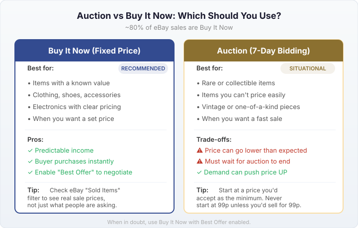
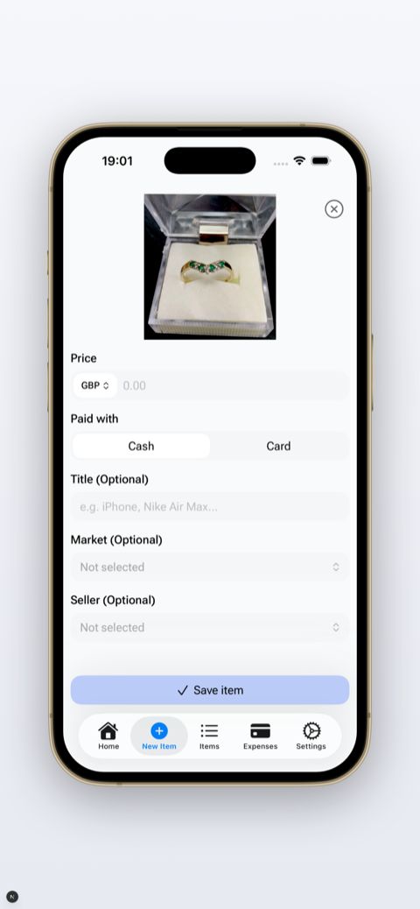

Last updated: 17 April 2026
How to Sell on eBay UK: Beginner’s Guide (2026)
eBay is still the biggest marketplace in the UK with over 30 million active buyers. Whether you’re clearing out a wardrobe or starting to resell for profit, listing your first item takes about 10 minutes.
Here’s everything you need to know to go from “I’ve never sold anything online” to “my first item just sold.”
1. Set up your eBay seller account
If you already have an eBay account for buying, you can sell from the same account. If not, create one at ebay.co.uk.
Before you can receive payments, eBay will ask you to set up Managed Payments. This means linking your bank account so eBay can pay you directly when items sell. PayPal is no longer used for eBay payments.
You’ll register as either a private seller or business seller. If you’re selling personal items you already own, choose private. If you’re buying items specifically to resell, you may need to register as a business seller — see the HMRC trading allowance guide for where the line is.
The good news: private sellers pay no fees on eBay UK. Zero. You keep everything.
2. Take good photos
Photos sell your item. Bad photos mean no sale, no matter how good your description is.
eBay gives you up to 24 free photos per listing. Use as many as you can:
- Natural light. Near a window during the day is fine. No flash, no yellow overhead lighting
- Clean background. A white wall, a plain sheet, or a clear table. The item should be the focus, not your living room
- Multiple angles. Front, back, close-up of labels/tags, any flaws or wear
- Show scale. If the size isn’t obvious, put something next to it for reference
- Photograph defects. Stains, scratches, missing buttons — show them. Buyers appreciate honesty and you’ll avoid returns
Take photos before you write the listing. Your phone camera is fine — you don’t need a professional setup.
3. Write a good title
Your title is what makes people click (or scroll past) in search results. You get 80 characters — use them.
Include: brand + item name + size + colour + condition. Think about what someone would type into the search bar.
Good: “Nike Air Max 90 Mens UK 9 White Black Trainers Good Condition”
Bad: “Trainers for sale”
Don’t use ALL CAPS, excessive punctuation (!!!), or words like “LOOK” or “L@@K” — they look spammy and eBay’s search doesn’t care about them.
4. Write the description
Keep it short and factual. Buyers scan descriptions, they don’t read essays.
Cover the basics:
- What the item is (if the title doesn’t make it obvious)
- Condition — be honest. “Worn twice, small mark on left heel” is better than “great condition” followed by a return request
- Measurements (for clothing: pit-to-pit, length, shoulder width)
- Anything missing (box, accessories, tags)
- Postage details if not covered in the listing settings
You don’t need HTML formatting or fancy templates. Plain text works.
If writing titles and descriptions for every item is the part that slows you down, tools like FlowLister generate both from a photo — worth a look if you’re listing in volume, though you should still proofread before publishing.
5. Set your price: Auction vs Buy It Now
About 80% of eBay sales are Buy It Now (fixed price), and for most items that’s the way to go. The buyer sees your price, clicks buy, and it’s done.
Use Buy It Now when:
- You know what the item is worth (check eBay sold listings — filter by “Sold Items” to see real sale prices)
- You want a predictable price
- You’re not in a rush to sell
Use auction when:
- You have something rare or collectible where demand might push the price up
- You genuinely don’t know what it’s worth and want the market to decide
- You want a fast sale (7-day auction with a low starting price)
Tip: Enable “Best Offer” on Buy It Now listings. Many buyers will offer slightly less than the asking price, and you can accept, decline, or counter. It’s a good way to negotiate without losing the listed price.
To see what similar items actually sold for, search for the item on eBay, then tick “Sold Items” under the filters. This shows real completed sales — much more useful than looking at current listings where sellers might be overpricing.

6. Set postage and delivery
This is where beginners lose money. If you offer free postage but don’t know what it actually costs to send, you might give away your profit.
Your main options:
- Charge the buyer for postage. Set a specific amount based on the item’s size and weight. Check current Royal Mail and Evri prices
- Offer free postage. You absorb the cost. Items with free postage can rank slightly higher in eBay search, but it eats your margin
- Collection only. Good for large items (furniture, exercise equipment) that are expensive to post
For clothing, most resellers use Royal Mail large letter (under 2.5cm thick) or Evri ParcelShop. Weigh the item with packaging before you list so you set the right postage amount.
eBay also offers eBay delivery (prepaid labels through Evri) which can sometimes be cheaper than buying postage separately. Check the rates when listing.
7. Choose your returns policy
eBay strongly encourages sellers to accept returns, and listings with returns accepted tend to rank better in search.
For private sellers, you can choose:
- No returns accepted — simpler, but buyers can still open “item not as described” cases
- 30-day returns — the buyer pays return postage. eBay recommends this
In practice, if you describe items honestly and photograph defects, returns are rare. Most returns happen because the item wasn’t as described — which is avoidable by being upfront.
8. List it and wait
Once you hit “List Item,” your listing goes live. eBay’s search algorithm indexes it, and buyers searching for that item will start seeing it.
Some things to know while you wait:
- New listings get a temporary boost in eBay search. Your item is most visible in the first few days
- Watchers are a good sign. If people are watching your item, it means the price is close but they’re waiting for a drop or deciding
- Respond to messages quickly. Buyers often message 2-3 sellers and buy from whoever replies first
- Don’t panic if it doesn’t sell immediately. Some items take weeks. If nothing happens after 2 weeks, consider lowering the price or improving photos
9. When it sells: pack and post
When your item sells, eBay sends you a notification. You need to post it within the dispatch time you set (usually 1–3 working days).
Packaging tips:
- Poly mailers for clothing — lightweight, waterproof, cheap in bulk (5-10p each from eBay or Amazon)
- Bubble wrap + cardboard box for fragile items
- Reuse packaging — there’s nothing wrong with reusing Amazon boxes or padded envelopes as long as old labels are removed
- Don’t overspend on packaging. It’s a cost that adds up. Buy in bulk when you can
After posting, add the tracking number to eBay (if you used tracked delivery). This updates the buyer and protects you if they claim non-delivery.
10. Getting paid
eBay pays directly to your bank account through Managed Payments. For new sellers, there’s usually a short holding period (a few days) while eBay builds trust in your account. After your first few sales, payouts speed up and typically arrive daily.
You can see your balance, pending funds, and payout schedule in the “Payments” section of your seller dashboard.
Real examples: what first flips look like
To give you an idea of what’s realistic, here are some actual first flips shared by beginners on r/FlippingUK:
One new reseller bought an iPhone 7 with a cracked screen on Facebook Marketplace for £130 (haggled down from £180), bought a replacement screen for £30, repaired it himself, and sold the phone on eBay for £255. He even sold the old cracked LCD for £15. Total profit: £110, turnaround time 4 days.
The same person bought Pokemon Sun, Moon, Alpha Sapphire and Y for £50 as a bundle on Facebook, then sold them individually on eBay for £80. And 40 original Xbox games for £10 from a car boot sale — profit around £25–30 after selling most of them individually.
Nothing life-changing, but that’s the point. Small, consistent flips add up. The key is buying from places where sellers don’t know (or don’t care about) the real value, and selling where buyers are actively searching for that exact item.
Another common thread on UK reselling forums: people with £300 or less asking how to get started. The consistent advice is always the same — start with things you already own, learn what sells by checking eBay sold listings, and reinvest your profits into stock you’ve researched. Don’t spend your starting budget on things you haven’t checked.

Common mistakes beginners make
- Not checking sold prices. Just because someone is listing a jacket for £50 doesn’t mean it sells for £50. Always check “Sold Items” for actual sale prices
- Underestimating postage costs. Weigh and measure your item with packaging before setting the postage price
- One dark photo. More photos = more confidence = faster sale. Natural light, multiple angles
- Vague titles. “Nice jumper” gets zero clicks. Be specific: brand, size, colour, material
- Ignoring buyer messages. Slow responses lose sales. Reply within a few hours if you can
- Not tracking expenses. If you’re buying items to resell, you need to know your actual profit after purchase price, postage, packaging, entry fees, and travel. A lot of resellers think they’re making money when they’re not — see our guide to tracking reselling profits properly
What about fees?
If you’re a private seller, eBay is free — no final value fees, no commission, 300 free listings per month. Business sellers pay 10.9–12.9% depending on category.
For the full breakdown including the February 2026 changes, see our eBay selling fees UK 2026 guide.
Frequently asked questions
Is it free to sell on eBay UK?
Yes, for private sellers. No final value fees, 300 free listings per month. Business sellers pay fees. See the full fee breakdown.
How do I get paid when I sell on eBay UK?
Through Managed Payments, directly to your bank account. PayPal is no longer used. Payouts are daily or weekly depending on your settings.
Should I use auction or Buy It Now?
Buy It Now for most items. Auctions for rare/collectible items or when you don’t know the value. About 80% of eBay sales are Buy It Now.
How many photos should I use?
As many as possible. eBay allows 24 free photos. At minimum: front, back, labels, and any flaws. More photos mean fewer questions and faster sales.
Track every sale from day one
If you’re reselling for profit, knowing your real numbers from the start saves headaches later. FlipperHelper tracks purchase price, postage, fees, and profit per item — so you always know what’s actually working.
Download Free on the App StoreGet it Free on Google Play